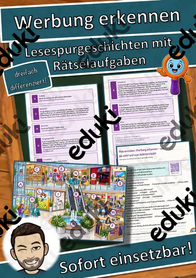

Lesespur: Bildsprache der Werbung: wie Bilder überzeugen – Lesespurgeschichte mit Rätseln (Klasse 10)
Bildsprache der Werbung – wie Bilder überzeugen – Lesespurgeschichte Kunst (Klasse 10)Begib dich mit deiner Klasse auf eine spannende Lesespur hinter die Kulissen der Werbung! Carla und Timur besuchen mit ihrem Kunstkurs eine Ausstellung im Museum für Gestaltung: Im Plakatsaal entdecken sie, wie Künstler um 1900 die Plakatkunst prägten, im Blickraum erfahren sie, wie Werbung unseren Blick über Gesichter, Bilder und Text lenkt, im Farbkabinett geht es um die Wirkung von Rot, Blau und Grün. Im Retuschelabor vergleichen sie bearbeitete Werbefotos mit dem Original, im Wunschsaal lernen sie das AIDA-Modell und die Macht von Lebensgefühlen kennen, an der Smartphonewand geht es um Influencer-Werbung und Kennzeichnungspflicht – und im Kreativstudio gestalten alle ein Plakat für eine gute Sache. Ihr Megafon Megi ist immer dabei. Am Ende jedes Abschnitts verrät ein Hinweis den nächsten Ort auf dem Ausstellungsplan – nur wer genau liest, findet den Weg und sammelt alle geheimen Buchstaben zum Lösungswort.
Die perfekte Lesespur für den KUNSTUNTERRICHT der 10. Klasse – ideal als Einstieg in die Werbeanalyse: Sie verbindet sinnentnehmendes Lesen mit Gestaltungswissen und Medienkritik – und bereitet eigene Analysen und Plakatentwürfe vor. Das Material ist SOFORT EINSETZBAR und in DREI DIFFERENZIERUNGSSTUFEN (leicht ★ / mittel ★★ / schwer ★★★) angelegt.WICHTIG: Das komplette Material ist sowohl in FARBE als auch in SCHWARZ-WEISS enthalten – ideal zum Sparen von Druckkosten.DAS IST ENTHALTEN
- Lesespurgeschichte in 3 Niveaus (leicht, mittel, schwer)
- farbiger Ausstellungsplan als Suchkarte
- Hörverstehen mit QR-Code zur MP3 (selbstständiges Hören mit Kopfhörern)
- vier Aufträge auf dem Weg: eine Zuordnung, ein Quiz, eine Rechenaufgabe (Prozent) und ein Steckbrief
- Rätselseite (Wörter-Suchsel + Fragen)
- Ausmalbild zum Thema (Jugendstilplakat)
- ausführliches Lösungsblatt für die Lehrkraft
- alles zusätzlich als komplette Schwarz-Weiß-VarianteSO GEHT DIE LESESPURDie Jugendlichen lesen ab START, finden im Text den nächsten Ort, suchen ihn auf dem Ausstellungsplan und lesen bei dieser Station weiter. An jeder richtigen Station gibt es einen Buchstaben. Eingebaute Sackgassen (Museumsshop, Garderobe, Aufzug, Cafeteria) sind keine Stationen und dienen der Selbstkontrolle. Am Ende werden die gesammelten Buchstaben umgestellt und ergeben ein geheimes Lösungswort. (Die Lösungen sind selbstverständlich nur im Lösungsblatt für die Lehrkraft enthalten.)INHALTLICHER SCHWERPUNKTDie Jugendlichen lernen Grundbegriffe der Werbung (Blickfang, Slogan, Zielgruppe, Logo, Testimonial) kennen, analysieren Blickführung und Farbwirkung, erkennen Bildbearbeitung und ihre Folgen, verstehen das AIDA-Modell und den Verkauf von Lebensgefühlen, beurteilen Influencer-Werbung und Kennzeichnungspflicht und setzen Werbemittel bewusst für ein eigenes Plakat ein.ABGEDECKTER LEHRPLAN (Klasse 10, Kunst)
- Kunst (LehrplanPLUS Bayern) – Jahrgangsstufe 10 „Bildsprache und Wirkung / Medien analysieren“: Gestaltungsmittel der Werbung analysieren, Bildbearbeitung und Werbung in sozialen Medien kritisch beurteilen und eigene Plakate zielgerichtet gestalten.
- Deutsch – Lesen und mit Texten umgehen: Sachinformationen gezielt entnehmen und bewerten; Zuhören: einem Sachhörtext konzentriert folgen (Hörverstehen mit MP3).
- Mathematik – Prozentrechnung, Multiplikation.
- Fächerübergreifend / Kompetenzen: Wirtschaft (Verbraucherbildung), Medienbildung, Körperbild und Selbstwert, genaues Lesen und Prüfen, kreatives Gestalten (Ausmalbild).
Geeignet für Freiarbeit, Stationenlernen, Vertretungsstunden, Wochenplan, Projekttage und Distanzunterricht. Klassenstufe 10.
Ähnliche Materialien

Politische Werbung Lückentext mit Wortspeicher Hörverstehen und Suchsel

Werbung Lückentext mit Wortspeicher Hörverstehen und Suchsel

Lesespur: Präsentationen gestalten: Folien, die überzeugen – Lesespurgeschichte mit Rätseln (Klasse 6)

Lesespur: Sport und Medien: Werbung, Stars und Vorbilder – Lesespurgeschichte mit Rätseln (Klasse 10)

Lesespur: Musik und Werbung: Jingle, Slogan, Klanglogo – Lesespurgeschichte mit Rätseln (Klasse 10)

Lesespur: Die Zaubershow: Hinter den Kulissen der Magie – Lesespurgeschichte mit Rätseln (Klasse 5)

Lesespur: Werbung erkennen: wie sie wirkt und was dahintersteckt – Lesespurgeschichte mit Rätseln (Klasse 8)